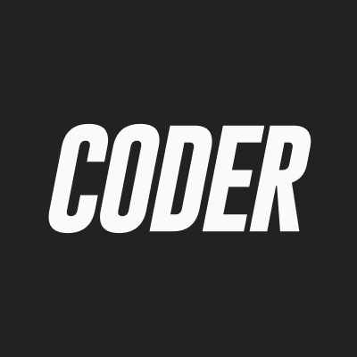

Bienvenidos a mi espacio digital. Soy Felipe Román, un apasionado del desarrollo web y estudiante de la carrera deFullstack en Coderhouse. Este sitio web es el proyecto final de mi primera materia, donde he puesto en práctica misconocimientos de HTML y SASS para crear una experiencia de usuario atractiva y funcional.
A través de este proyecto, he podido explorar el poder del diseño y la programación para construir desde cero unsitio que no solo es visualmente agradable, sino también intuitivo y accesible. Como desarrollador fullstack enformación, me esfuerzo por dominar tanto el frontend como el backend, asegurándome de que cada línea de códigocontribuya a una solución eficiente y efectiva. Estoy comprometido con el aprendizaje continuo y la mejora constante,buscando siempre la manera de superar los desafíos técnicos con creatividad e innovación.
